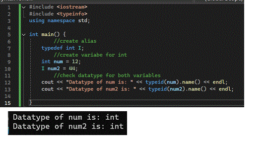
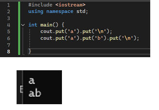
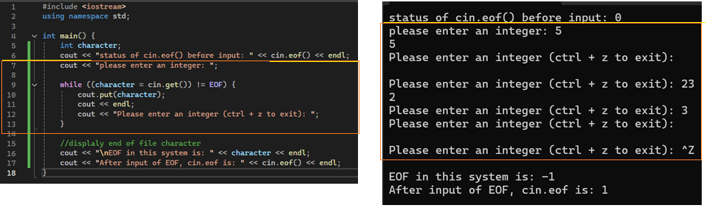
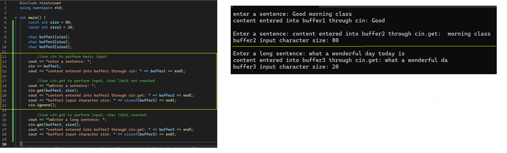
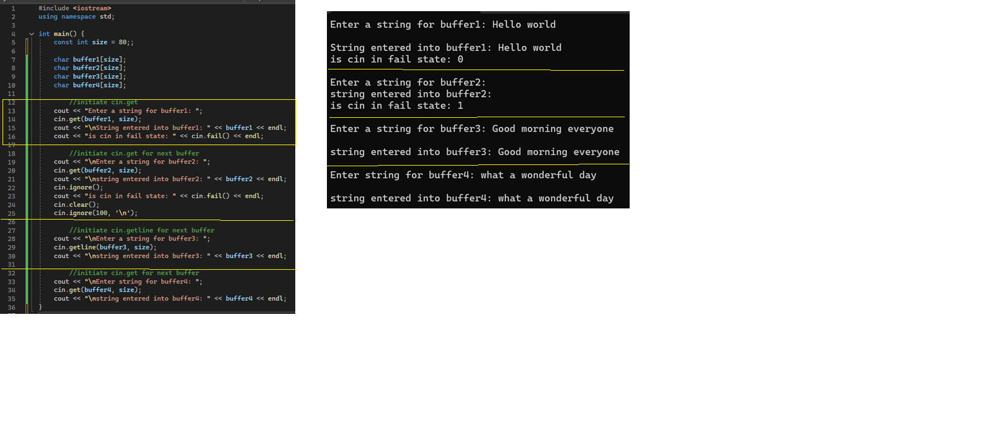

1) input : byte flow from device to main memory
2) output: byte flow from main memory to device
Streams provide low and high level I/O capabilities
Low level capabilities (unformatted I/O
1) specify byte transfer from (memory -> device) or (device -> memory)
2) provide high speed and high volume transfers
3) Not very particularly convienent
High level capabilities (formatted I/O
1) Bytes grouped into meaningful units
2)Integer, floating point numbers, character, string, user-defined types
Classic streams vs standard streams
Classic stream libraries
1) Enables input of characters as each character represents 1 byte
Standard stream
1) capable of performing I/O operations with unicode characters
2) includes type wchar_t = stores 2 bytes
3)
iostream library header
iostream header file
1) provides basic services required for all I/O operations
2) Defines the cin, cout, cerr, clog objects
iomanip header file
1) declares services useful for performing formatted I/O operations
2) uses parameterized stream manipulators: setW and setprecision
fstream header file
declares servies for file processing
Stream input / output classes and objects
template basic istream
support stream input operations
cin is an instance of istream
>> operator is overloaded to input fundamental types
template basic ostream
support ouput stream
cout is an instance of ostream
<< operator is overloaded to outout data items of fundamental types
cerr is an ostream instance
said to be connected to the standard error devie (screen)
output to cerr is unbuffered meaning immediate ouput once initiated
good for notifications or alerts
clog is an ostream instance
output to clog is held until buffer is either filled or flushed
typedef
Allows the user to create an alias for a datatype for future usage
basic istream and ostream are derived functions of basic i/o stream
file processing templates
File processing use class template basic_ifstream -> file imput
File processing uses class template of_stream -> file output
file processing uses class template basic_fstream -> file input / output
stream inheritance
basic_ifstream inherits from basic_istream
basic_ofstream inherits from basic_ostream
basic_fstream inherits from basic_iostream
Create datatype alias

code breakdown
Lines 1-3: import libraries and namespace for operation
line 7: create datatype alias for integer
datatype alias format: typedef datatype alias
1)typedef : syntax to initiate the alias operation
2) datatype : datatype the alias is to contain
3) alias : name for the alias datatype
Line 10: create variable with alias
similar to creating a regular variable except the alias name would be used inplace for the actual datatype name
output with .put function

code breakdown
Lines 1-2 : library and namespace imports
Lines 5-6: output with .put
check eof status for input

code breakdown
line 1-2 : import libraries and namespace
Line 5: initiate variable
Line 6: check eof status
Returns the boolean status eof for cin
lines 9~12 : code block
System will request user to enter an integer as long as cin.eof() value is false
User must enter the key combination ctrl + z to exit the loop
Line 16: Returns the boolean status of cin.get
Because variable character was last assigned the cin.eof() boolean in the loop
line 17: Return current cin.eof status
Notes and rules
notes
Rules
1) cin.eof() only returns either 1 for true or 0 for false
2) ctrl + z is the key combination to initiate eof status in which system will return 1
comparison of cin and cin.get

code breakdown
Lines 1-2 : import library and namespace
Lines 5-10 : initiate variables
Lines 13-15 : input by cin example
cin terminates by newline character and rest of user input is passed onto next cin
lines 18-21 : cin.get size not met example
1)No input was required as the cin.get absorbed the rest of the user's input from the previous cin
2) The indicated cin.get size limit was not reached, therefore the remaining space was filled with new line characters
Line 22: terminate cin.get function
Lines 25-28 : cin.get size limit met
When size limit was met cin.get will only accept input characters up to the size limit indicated
2) The rest of the extra characters would either be ignored or passed onto the next cin / cin.get function
information and rules
info
1)cin terminates input by the next newline character
2)cin.get if size limit is not reached then input terminates by newline character
3)if size has been reached then input terminates by reaching size limit
Rules
1) cin delimiter is any new line charater
2) when cin.get is used, cin.ignore() must be used to terminate the current cin
__if not the next cin / cin.get would be absorbed by the previous cin.get status
cin.get() vs cin.getline() functions

code breakdown
Lines 1-2 : import libraries and namespace
Lines 5-10 : initiate variables
Lines 13-16 : initiate cin.get() to extract user input
recieves user input and stores into indicated variable
Lines 19 - 23 : initiates second cin.get() for user input
Retieves newline character from first cin.get()
lines 23 - 25 : check cin status
line 23 : checks if cin is in a failstate
___In this case yes because cin's first input was a newline character causing cin to freeze to prevent possible further damage
Line 24 : resets cin's state but does not clear any characters in the buffer
Line 25: removes the remaining new line character in the buffer
Line 28 - 30 : initiate cin.getline() for user input
Lines 33-36 : initiate cin.get for user input
cin.get() vs cin.getline() comparison
cin.get()
1) Recieves user input
2) terminates by newline character or when character limit has been reached
3) Newline characters are not absorbed and are passed on to the next cin funcion
4) processes input character by character
cin.getline()
1) recieves user input
2) Terminates by newline character or limit has been reached
3) absorns newline character so next cin function starts with a new slate
4) processes entire string at once